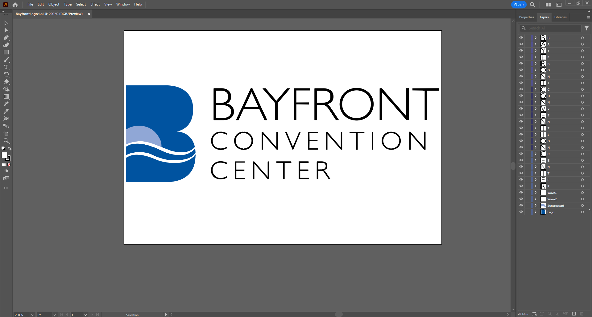

This Blog Is Dedicated To My Summer 2024 Internship At ECCCA
This summer (2024) I will be working at ECCCA (Erie Events) as an IT and Social Media Intern
Week of May 13th
This starting week I got introduced to the staff all acorss each job site. This includes Erie Bayfront Convention Center, Erie Insurance Arena, UPMC Ball Park,
I have also been specially introduced to people that I can collab with such the Convention Centers (main office for me) website manager and social media team.
I also have been introduced to the Warners Bros. Theater production manager and have noted that I would like to collab with him.
Warner Theater, and the Sheraton Hotel.
After the first two introduction days I have been doing multiple projects across a few sites.
One major project that me and my site manager (Michael Bane) need to do is set up around a total of 50 camera systems throughout The Sheraton Hotel and bayfront Coonvetion Center.
Wednesday and Thursday Michael and I went over the the Sheraton and hooked the few existing cameras up. We just had an new switch box installed in the Sheraton to
accompany all the new cameras, which we then hooked up. On my off time from doing main projects I have revived this dead website lol. I replaced most pages and
combined all my school work onto the class projects site on my nav bar and made the pages more uniform and stylized.
Week of May 20th
This 2nd week I goit introduced to more people over at the Sheraton Hotel. Throughout the week we hung around 20 cameras throughout the kitchen and lobby and garage.
My main task I wanted to do this week was to redo my color scheme on my website. I have been on a Dune spree reading the first book and wacthing the second movie that came out.
I have been kinda obsessed lol. I redid the color scheme to match color of spice from the movie which is a dark brown with an accent around the edge of the webpage.
I also found the font that they used on the movie trailer, which I am obsessed with! Overall I am happy with the upgrades aand can't wait top see what else I can and will add.
To lastly note I have a meeting on the 29th with our social media/ website manager and I can't wait to share some ideas. Some questions I wanted to ask were, If there was any engagment
across a younger audience with things such as anime expo, or pokemon tournaments etc.
Week of May 27th
This 3rd week interning at ECCCA I personally did not do much project wise across the Sheraton Hotel.
We had monday off due to Memorial Day. On Teusday we hung a few cameras and I worked heavily on my website and included a page
showcasing every important class, qualification or certificate that I recieved or completed. This will help future employers or agencies to see what I have done in more detail outside of my resume. On wednesday I had a meeting with the
Erie events social media and website manager Erica. We disscussed loads of things but the main takeaways she wanted me to do was to a full website audit of the Erie Events homepages that include the convention center, the theater,
and the Erie Insurance Arena. She also wanted me to record and take reels showing of each area and put them on the websites. The major problem she was having was the website editor and service provider she was using was not
allowing much customization for the web pages, so she needs to contact them and get that sorted out. The rest of the week I could not work due to a hacking attempt from an
unknown person that brought the internet down halted our offices from doing anything.
Michael was busy with that through the rest of the week and we will see come monday if the problem has been resolved.
Week of June 3rd
This 4th week was a full week! I worked throughout all the sites and had to go through evey computer disabling settings as damage control from last weeks cyber attack.
I also started learning C++ on W3schools and am about halfway through the modules. I then finished my website and social media account audits document and sent it back to Erica Nowak over at the Insurance Arena.
Finally I worked on my website an added a drop down menu at the end of my nav bar to clear up the amount of pages I have.
Week of June 10th
This 5th week site manager (Michael is out throuhg the whole week so there is nto much for me to do. I worked more on learning C++ on W3schools and fix small nav bar complcations on my website.
I will now be having a recurring meeting each thursday with Erica the director of marketing. We will discuss plans to improve the Erie Events websites and social media accounts.
This week we talked about event planning to introduce in a younger audience into the theater. We then discussed stoaryboarding and social media accounts and how to revive them.
Week of June 17th
This 6th week I have arrived around the halfway through the internship. I was tasked by Erica (Director Of Marketing) to come envision storyboards and social media posts for the Warner Theater.
Then move to the other buildings that include the Erie Insurance Arena,and Bayfront Convention Center. The larger task I started this week was to go through Warner theater footage that is featured on their about page,
labeling and cuting clips to post on our social media accounts. The accounts that we plan to work on are the Erie Events Instagram, Facebook, and possibly making a Tik Tok account.
I want to reach a more younger and wider audience with Tik Tok and Instagram Reels.
Week of June 24th
This week I finished with some large portions of brainstorming social media posts and ideas with Erica. I wanted to make an short animation
that could be placed before or at the end of the clips that we would post. Here is a
short that I created this week. This is a work in progress, i want to finish it by putting some kind of color gradient behind it to match the front animation. I used illustrator to convert a photo to vectors and then used After Effects
to animated to motions of the letter and flags. The hardest thing for this animation was the keyframes and getting the timing right to what I wanted it to be.
Week of July 1st
This week has been short with thursday and friday off due to the 4th of July> I am preparing on goin on vacation next week and completing a animation I have been working on an reel animation for the Warner Theatre this week
this week. I wanted to get this done before the week has ended so I don't forget my creative thought process before my vacation. The main problem I was having with this animation was the sun wheel key frames.
The timing and rotation key frames were hard to get down without
it looking slow and weird. Here is the concept draft for the reel. When I return from break I want to sart working on the Bayfront
Convention Center reel and then finish up with the Insurance Arena.
Week of July 8th
BIRTHDAY WEEK!!! (I have off)
Week of July 15th
With the return from my vaction in the Outer Banks I finished tweaking the Warner Theater reel Here and started the Bayfront Convetion Center Animation. I did not have much time to
start the next animation workflow as I came back late into the week so I wanted to keep my thoughts together until the following week. I did complete the Adobe Illustrator file .
Next week I will be working on the Bayfront animation and starting the Illustrator file for The Erie Insurance Arena. Following that week I will be wrapping up animation for the Erie Insurance Arena and my internship on the 9th. I have been greatly enjoying this oppurtunity that I was given to work with everybody.
Week of July 22nd
This week I worked on creating animations for the Bayfront Convention Center logo. I wanted to start with showing different design prompts to help Erica (Director of Marketing)
ways she can sustain constant posts for holidays such as Halloween with this reel or this reel. Each word has a different animations to blossom ideas for other after I am finished with my internship and allow other to work on wath or started. This can be used for general purpose stuff or specific events.
I also helped the Bayfronts social media and marketing manager Madison to create some shirt logos in Adobe Illustrator.
Week of July 29th
Coming up on the end of the internship it flew by alot faster than I expected. This week ended shorter on Wendnesday because I have a Dentist appointment on Thursday.
I had tried to start on a project for the Erie Insurance Arena logo animations. With the time constraint and problems I faced with the software I decided to not go ahead working on the animation.
I instead worked on my existing logo and mading alternate color options for these logos. I also produced some variations for the already existing reels. I also finally figured out how to fix my blog webpage. It is centered but the text is a little wider than I wanted.